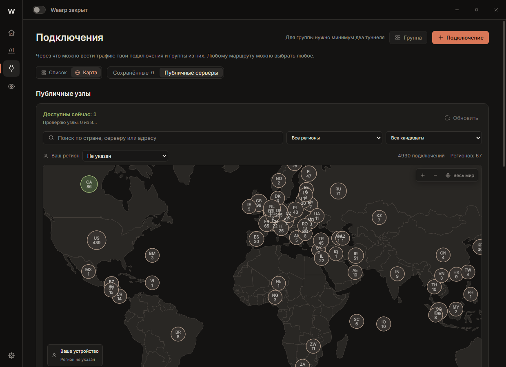

Routes for individual apps
On Windows, configure rules for processes, services and domains. On Android, choose applications and the path their traffic takes.
Windows + Android · open source Preview builds
Route a browser through your personal VPN, give a website its own route and keep other traffic direct. Waarp brings your connections and routing rules into one interface.
These are previews for testing: Windows r6 is an unsigned EXE; Android r5 is a debug APK. The source on main develops separately from these releases.

Waarp is a client for managing traffic routes. Connect your own VPN or proxy, then choose which traffic uses it.
On Windows, configure rules for processes, services and domains. On Android, choose applications and the path their traffic takes.
Import supported profiles and choose a connection from your library. An optional public catalog helps you discover third-party nodes.
On Windows, inspect DNS, TCP, TLS and HTTP checks for a target address. See measured responses and identify where a connection breaks.
Native Android client
Profile imports, selected-app routes, connection lists and maps in a native Kotlin interface. Browsing the map does not start the VPN or apply a route.
The preview r5 APK is signed with a debug key and installs separately from the production app. Choose the build for your device architecture before installing.
Requires Obtainium: import the Android preview, confirm the import, then install. Setup guide.

Download the file for your platform and verify its SHA-256 using the installation guide.
Import a profile from your server or provider. Windows needs elevation to start the tunnel; Android asks for the system VPN permission.
Choose an application and a connection, save the route, then check the result in diagnostics.
Before you connect. Public nodes are operated by third parties; availability and terms vary. Windows has no independent firewall kill switch: if the engine exits, the system may resume its normal route. Reliability and limitations.
Building from the current source? The repository guide describes the build process and features on main. For downloaded preview builds, use the release notes.